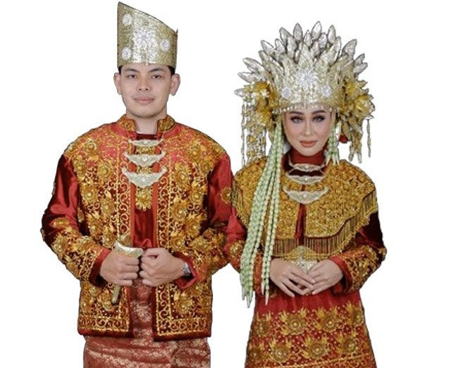
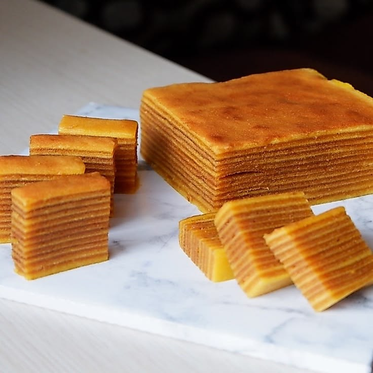
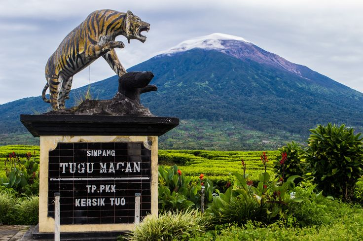

Kebudayaan Melayu Jambi
Menelusuri jejak pesona, tradisi, dan kekayaan seni warisan nenek moyang di Bumi Sepucuk Jambi Lurah

Pakaian Adat Melayu
Simbol keagungan dan kesantunan masyarakat Melayu Jambi dengan sulaman benang emas yang anggun serta mahkota Lacak khas untuk pria.

Candi Muaro Jambi
Kompleks percandian bata merah terluas di Asia Tenggara, warisan Kerajaan Melayu kuno dan pusat pembelajaran percandian abad ke-7

Kue Lapis Khas Jambi
Kue lapis yang merupakan salah satu makanan khas Jambi dengan rasa manis dan tekstur lembut.
Tari Sekapur Sirih
Tarian tradisional penyambutan tamu agung yang melambangkan kehangatan, keramahan, dan rasa hormat masyarakat Melayu Jambi melalui persembahan sirih pinang
Pacu Perahu Tradisional
Atraksi pesta rakyat tahunan di Sungai Batanghari yang menampilkan ketangkasan, kekompakan, dan semangat gotong royong para pendayung perahu tradisional Jambi

Gunung Kerinci & Kayu Aro
Perpaduan megah Gunung Kerinci (3.805 mdpl) dengan indahnya hamparan hijau Kebun Teh Kayu Aro, perkebunan teh tertinggi kedua di dunia